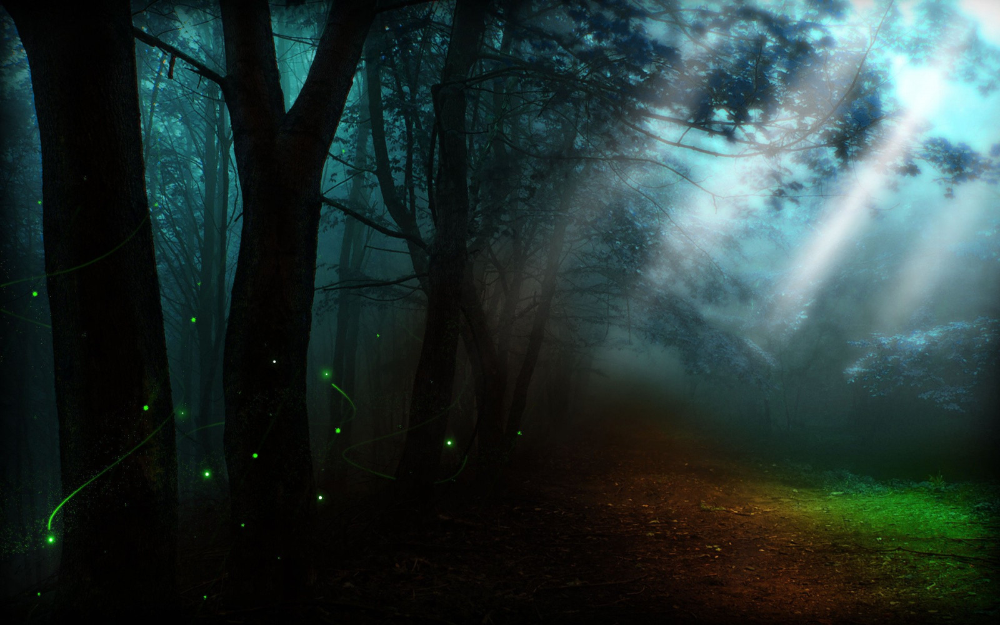
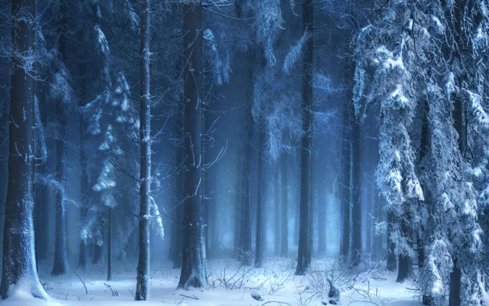
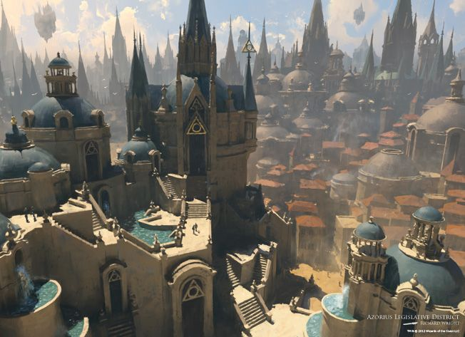
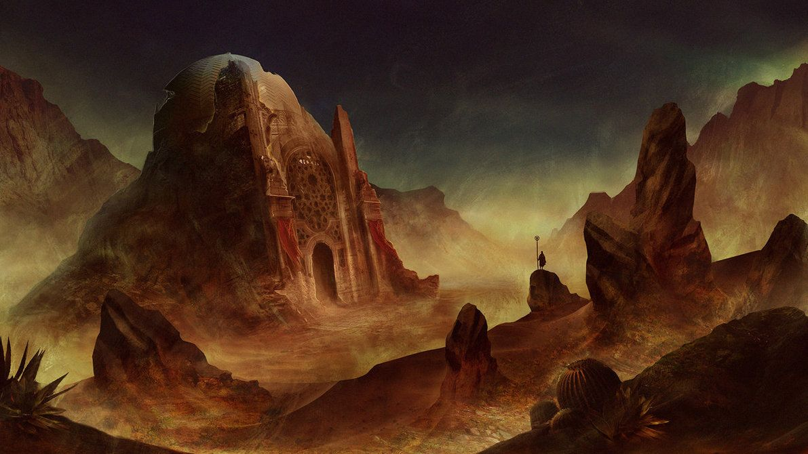
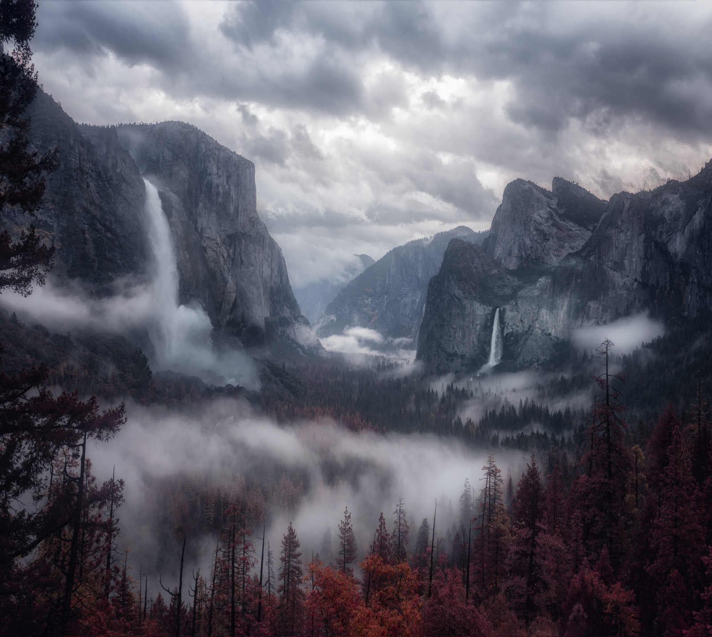
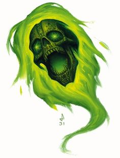

AURORIA
Auroria é um gigante mundo dividido nos dias de hoje, pois
a dezenas de milhares de anos atrás, por conta da queda
da Torre dos Imortais e a decisão das divindades de criar a
Grande Cisão, o único e colossal continente mundial se
fragmentou em seis outros menores continentes, assim,
fazendo com que diversos Legados migrassem nessa
separação do mundo.
Nos dias de hoje os seis grandes continentes de Auroria
possuem suas características únicas, comércio, biomas e
mistérios, então o que não irá faltar é uma aventura para
você e o seu grupo.
╬╬══════════════════════════❮◆❯═════════════════════════╬╬

Aenolia:
O continente ao Sul do mundo, a grande região
tropical de Auroria, cercada por diversos arquipélagos, lar
de florestas colossais e pântanos que protegem tribos
antigas que vivem na região. Hoje Aenolia é considerada
uma das regiões com maior contato místico do mundo.
╬╬═════════❮◆❯═════════╬╬

Drakar:
O continente gélido ao Norte do mundo, cercado
por montanhas, florestas e lagos congelados. Um
continente que costuma sobreviver sozinho, sem o
envolvimento de outros continentes.
╬╬═════════❮◆❯═════════╬╬

Drunar:
O continente no centro do mundo, e com isso, o
maior, e mais importante.
Um continente que possui um pouco de cada
bioma dos outros continentes, pois ele estava no centro da
Grande Cisão. Hoje Drunar é o maior foco comercial de
Auroria, pois a Grande Capital, Alderium, coração do
reinado Humano, é a mais importante cidade da era atual.
╬╬═════════❮◆❯═════════╬╬

Krabesh:
O continente desértico a Leste do mundo, o lar
escaldante do Deserto de Ak’dala. Este continente é
coberto por um mar de areia, sem nenhuma estrada, mas
que possui oásis e cidades inesquecíveis, como Ja’zaar.
╬╬═════════❮◆❯═════════╬╬

Vértonie:
O continente arruinado a Oeste do mundo.
Um conflito entre certos Legados acontece nesta região
desde a Era Dourada. Vértonie possui um solo
avermelhado e infértil, altas montanhas que abrigam seres
perigosos que influenciam no descontrole elemental desta
região.
╬╬═════════❮◆❯═════════╬╬
